Optional introduction to category theory
The purpose of this page (which can safely be skipped), is to explain how certain concepts and terminology from the theory of monoidal categories apply in the context of tensors. In particular, we are interested in the category $\mathbf{Vect}$, but our concept of tensors can be extended to morphisms of any category that shares similar properties. These properties are reviewed below.
In particular, we will as example also study the more general case of $\mathbf{SVect}$, i.e. the category of super vector spaces, which contains $\mathbf{Vect}$ as a subcategory and which are useful to describe fermions.
In the end, the goal of identifying tensor manipulations in TensorKit.jl with concepts from category theory is to put the diagrammatic formulation of tensor networks in the most general context on a firmer footing. The following exposition is mostly based on [turaev], combined with input from [selinger], [kassel], [kitaev], and $n$Lab, to which we refer for further information. Furthermore, we recommend the nice introduction of [beer].
Categories, functors and natural transformations
To start, a category $C$ consists of
- a class $\mathrm{Ob}(C)$ of objects $V$, $W$, …
- for each pair of objects $V$ and $W$, a set $\mathrm{Hom}_C(W,V)$ of morphisms $f:W→V$; for a given map $f$, $W$ is called the domain or source, and $V$ the codomain or target.
- composition of morphisms $f:W→V$ and $g:X→W$ into $(f ∘ g):X→V$ that is associative, such that for $h:Y→X$ we have $f ∘ (g ∘ h) = (f ∘ g) ∘ h$
- for each object $V$, an identity morphism $\mathrm{id}_V:V→V$ such that $f ∘ \mathrm{id}_W = f = \mathrm{id}_V ∘ f$.
The morphisms in $\mathrm{Hom}_C(V,V)$ are known as endomorphism and this set is also denoted as $End_C(V)$. When the category $C$ is clear, we can drop the subscript in $\mathrm{Hom}(W,V)$. A morphism $f:W→V$ is an isomorphism if there exists a morphism $f^{-1}:V→W$ called its inverse, such that $f^{-1} ∘ f = \mathrm{id}_W$ and $f ∘ f^{-1} = \mathrm{id}_V$.
Throughout this manual, we associate a graphical representation to morphisms and compositions thereof, which is sometimes referred to as the Penrose graphical calculus. To morphisms, we associate boxes with an incoming and outgoing line denoting the object in its source and target. The flow from source to target, and thus the direction of morphism composition $f ∘ g$ (sometimes known as the flow of time) can be chosen left to right (like the arrow in $f:W→V$), right to left (like the composition order $f ∘ g$, or the matrix product), bottom to top (quantum field theory convention) or top to bottom (quantum circuit convention). Throughout this manual, we stick to this latter convention (which is not very common in manuscripts on category theory):
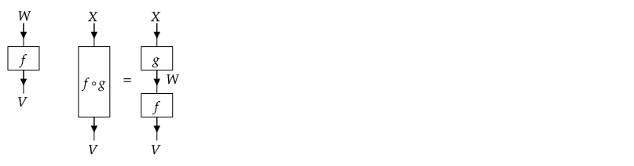
The direction of the arrows, which become important once we introduce duals, are also subject to convention, and are here chosen to follow the arrow in $f:W→V$, i.e. the source comes in and the target goes out. Strangely enough, this is opposite to the most common convention.
In the case of interest, i.e. the category $\mathbf{(Fin)Vect}_{𝕜}$ (or some subcategory thereof), the objects are (finite-dimensional) vector spaces over a field $𝕜$, and the morphisms are linear maps between these vector spaces with "matrix multiplication" as composition. More importantly, the morphism spaces $\mathrm{Hom}(W,V)$ are themselves vector spaces. More general categories where the morphism spaces are vector spaces over a field $𝕜$ (or modules over a ring $𝕜$) and the composition of morphisms is a bilinear operation are called $𝕜$-linear categories (or $𝕜$-algebroids, or $\mathbf{Vect}_{𝕜}$-enriched categories). In that case, the endomorphisms $\mathrm{End}(V)$ are a $𝕜$-algebra with $\mathrm{id}_V$ as the identity.
We also introduce some definitions which will be useful further on. A functor $F$ between two categories $C$ and $D$ is, colloquially speaking, a mapping between categories that preserves morphism composition and identities. More specifically, $F:C→D$ assigns to every object $V ∈ \mathrm{Ob}(C)$ an object $F(V) ∈ \mathrm{Ob}(D)$, and to each morphism $f ∈ \mathrm{Hom}_C(W,V)$ a morphism $F(f) ∈ \mathrm{Hom}_D(F(W), F(V))$ such that $F(f) ∘_D F(g) = F(f ∘_C g)$ and $F(\mathrm{id}_V) = \mathrm{id}_{F(V)}$ (where we denoted the possibly different composition laws in $C$ and $D$ explicitly with a subscript). In particular, every category $C$ has an identity functor $1_C$ that acts trivially on objects and morphisms. Functors can also be composed. A $𝕜$-linear functor between two $𝕜$-linear categories has a linear action on morphisms.
Given two categories $C$ and $D$, and two functors $F$ and $G$ that map from $C$ to $D$, a natural transformation $φ:F⟶G$ is a family of morphisms $φ_V ∈ \mathrm{Hom}_D(F(V),G(V))$ in $D$, labeled by the objects $V$ of $C$, such that $φ_V ∘ F(f) = G(f) ∘ φ_W$ for all morphisms $f ∈ \mathrm{Hom}_C(W,V)$. If all morphisms $φ_V$ are isomorphisms, $φ$ is called a natural isomorphism and the two functors $F$ and $G$ are said to be isomorphic.
The product of two categories $C$ and $C′$, denoted $C × C′$, is the category with objects $\mathrm{Ob}(C×C′) = \mathrm{Ob}(C) × \mathrm{Ob}(C′)$, whose elements are denoted as tuples $(V,V′)$, and morphisms $\mathrm{Hom}_{C×C′}((W,W′), (V,V′)) = \mathrm{Hom}_{C}(W,V) × \mathrm{Hom}_{C′}(W′,V′)$. Composition acts as $(f,f′) ∘ (g,g′) = (f∘f′, g∘g′)$ and the identity is given by $\mathrm{id}_{V,V′} = (\mathrm{id}_V, \mathrm{id}_{V′})$. In a similar fashion, we can define the product of functors $F:C→D$ and $F′:C′→D′$ as a functor $F×F′: (C×C′)→(D×D′)$ mapping objects $(V,V′)$ to $(F(V), F′(V′))$ and morphisms $(f,f′)$ to $(F(f), F′(f′))$.
Monoidal categories
The next property of the category $\mathbf{Vect}$ that we want to highlight and generalize is that which allows to take tensor products. Indeed, a category $C$ is said to be a tensor category (a.k.a. a monoidal category), if it has
- a binary operation on objects $⊗: \mathrm{Ob}(C) × \mathrm{Ob}(C) → \mathrm{Ob}(C)$
- a binary operation on morphisms, also denoted as $⊗$, such that $⊗: \mathrm{Hom}_C(W_1,V_1) × \mathrm{Hom}_C(W_2,V_2) → \mathrm{Hom}_C(W_1 ⊗ W_2, V_1 ⊗ V_2)$
- an identity or unit object $I$
- three families of natural isomorphisms:
- $∀ V ∈ \mathrm{Ob}(C)$, a left unitor (a.k.a. left unitality constraint) $λ_V: I ⊗ V → V$
- $∀ V ∈ \mathrm{Ob}(C)$, a right unitor (a.k.a. right unitality constraint) $ρ_V: V ⊗ I → V$
- $∀ V_1, V_2, V_3 ∈ \mathrm{Ob}(C)$, an associator (a.k.a. associativity constraint) $α_{V_1,V_2,V_3}:(V_1 ⊗ V_2) ⊗ V_3 → V_1 ⊗ (V_2 ⊗ V_3)$
In terms of functors and natural transformations, $⊗$ is a functor from the product category $C × C$ to $C$. Furthermore, the left (or right) unitor $λ$ (or $ρ$) is a natural isomorphism between a nameless functor $C→C$ that maps objects $V → I ⊗ V$ (or $V→V ⊗ I$) and the identity functor $1_C$. Similarly, the associator $α$ is a natural isomorphism between the two functors $⊗(⊗ × 1_C)$ and $⊗(1_C × ⊗)$ from $C × C × C$ to $C$. In a $k$-linear category, the tensor product of morphisms is also a bilinear operation. A monoidal category is said to be strict if $I ⊗ V = V = V ⊗ I$ and $(V_1⊗V_2)⊗V_3 = V_1⊗(V_2⊗V_3)$, and the left and right unitor and associator are just the identity morphisms for these objects.
For the category $\mathbf{Vect}$, the identity object $I$ is just the scalar field $𝕜$ over which the vector spaces are defined, and which can be identified with a one- dimensional vector space. This is not automatically a strict category, especially if one considers how to represent tensor maps on a computer. The distinction between $V$, $I ⊗ V$ and $V ⊗ I$ amounts to adding or removing an extra factor $I$ to the tensor product structure of the domain or codomain, and so the left and right unitor are analogous to removing extra dimensions of size 1 from a multidimensional array. The fact that arrays with and without additional dimensions 1 are not automatically identical and an actual operation is required to insert or remove them, has led to some discussion in several programming languages that provide native support for multidimensional arrays.
For what concerns the associator, the distinction between $(V_1 ⊗ V_2) ⊗ V_3$ and $V_1 ⊗ (V_2 ⊗ V_3)$ is typically absent for simple tensors or multidimensional arrays. However, this grouping can be taken to indicate how to build the fusion tree for coupling irreps to a joint irrep in the case of symmetric tensors. As such, going from one to the other requires a recoupling (F-move) which has a non-trivial action on the reduced blocks. We elaborate on this in the context of Fusion categories below. However, we can already note that we will always represent tensor products using a canonical order $(…((V_1 ⊗ V_2) ⊗ V_3) … ⊗ V_N)$. A similar approach can be followed to turn any tensor category into a strict tensor category (see Section XI.5 of [kassel]).
The different natural isomorphisms involving the unit object have various relations, such as $λ_{V⊗W} ∘ α_{I,V,W} = λ_V ⊗ \mathrm{id}_W$ and $λ_I = ρ_I : I ⊗ I → I$. The last relation defines an isomorphism between $I ⊗ I$ and $I$, which can also be used to state that for $f, g ∈ End_C(I)$, $f ∘ g = ρ_I ∘ (f ⊗ g) ∘ λ_I^{-1} = g ∘ f$. Hence, the tensor product of morphisms in $End_C(I)$ can be related to morphism composition in $End_C(I)$, and furthermore, the monoid of endomorphisms $End_C(I)$ is commutative (abelian). In the case of a $𝕜$-linear category, it is an abelian $𝕜$-algebra. In the case of $\mathbf{Vect}$, $\mathrm{End}(I)$ is indeed isomorphic to the field of scalars $𝕜$. We return to the general case where $End_C(I)$ is isomorphic to $𝕜$ itself in the section on pre-fusion categories.
Furthermore, Mac Lane's coherence theorem states that the triangle and pentagon condition are sufficient to ensure that any consistent diagram made of associators and left and right unitors (involving all possible objects in $C$) commutes. For what concerns the graphical notation, the natural isomorphisms will not be represented and we make no distinction between $(V_1 ⊗ V_2) ⊗ V_3$ and $V_1 ⊗ (V_2 ⊗ V_3)$. Similarly, the identity object $I$ can be added or removed at will, and when drawn, is often represented by a dotted or dashed line. Note that any consistent way of inserting the associator or left or right unitor to convert a graphical representation to a diagram of compositions and tensor products of morphisms gives rise to the same result, by virtue of Mac Lane's coherence theorem. Using the horizontal direction (left to right) to stack tensor products, this gives rise to the following graphical notation for the tensor product of two morphisms, and for a general morphism $t$ between a tensor product of objects in source and target:
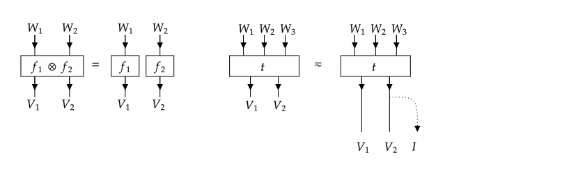
Another relevant example is the category $\mathbf{SVect}_𝕜$, which has as objects super vector spaces over $𝕜$, which are vector spaces with a $ℤ₂$ grading, i.e. they are decomposed as a direct sum $V = V_0 ⊕ V_1$. Furthermore, the morphisms between two super vector spaces are restricted to be grading preserving, i.e. $f∈ \mathrm{Hom}_{\mathbf{SVect}}(W,V)$ has $f(W_0) ⊂ V_0$ and $f(W_1) ⊂ V_1$. The graded tensor product between two super vector spaces is defined as $(V⊗_\mathrm{g}W) = (V ⊗_\mathrm{g} W)_0 ⊕ (V ⊗_\mathrm{g} W)_1$ with $(V ⊗_\mathrm{g} W)_0 = (V_0 ⊗ W_0) ⊕ (V_1 ⊗ W_1)$ and $(V ⊗_\mathrm{g} W)_1 = (V_0 ⊗ W_1) ⊕ (V_1 ⊗ W_0)$. The unit object $I$ is again isomorphic to $𝕜$, i.e. $I_0 = 𝕜$ and $I_1 = 0$, a zero-dimensional vector space. In particular, the category $\mathbf{SVect}_𝕜$ contains $\mathbf{Vect}_𝕜$ as a (monoidal) subcategory, by only selecting those objects $V$ for which $V_1 = 0$. We will return to the example of $\mathbf{SVect}$ throughout the remainder of this page.
Finally, we generalize the notion of a functor between monoidal categories. A monoidal functor between two tensor categories $(C, ⊗_C, I_C, α_C, λ_C, ρ_C)$ and $(D, ⊗_D, I_D, α_D, λ_D, ρ_D)$ is a functor $F:C→D$ together with two monoidal constraints, namely
- a morphism $F₀:I_D → F(I_C)$;
- a natural transformation $F_2={F_2(X,Y): F(X) ⊗_D F(Y) → F(X ⊗_C Y), ∀ X,Y∈ \mathrm{Ob}(C)}$ between the functors $⊗_D(F×F)$ and $F ⊗_C$ from $C×C$ to $D$.
A monoidal natural transformation $φ$ between two monoidal functors $F:C→D$ and $G:C→D$is a natural transformation $φ:F⟶G$ that furthermore satisfies
- $φ_{I_C} F_0 = G_0$;
- $∀ X,Y ∈ \mathrm{Ob}(C)$: $φ_{X ⊗ Y} F_2(X,Y) = G_2(X,Y)(φ_X ⊗ φ_Y)$.
For further reference, we also define the following categories which can be associated with the category $\mathcal{C} = (C, ⊗, I, α, λ, ρ)$
- $\mathcal{C}^{\mathrm{op}} = (C^{\mathrm{op}}, ⊗, I, α^{\mathrm{op}}, λ^{\mathrm{op}}, ρ^{\mathrm{op}})$ where the opposite category $C^{\mathrm{op}}$ has the same objects as $C$ but has $\mathrm{Hom}_{C^{\mathrm{op}}}(X,Y) = \mathrm{Hom}_C(Y,X)$ and a composition law $g ∘^{\mathrm{op}} f = f ∘ g$, with $∘$ the composition law of $C$. Furthermore, we have $α^{\mathrm{op}}_{X,Y,Z} = (α_{X,Y,Z})^{-1}$, $λ^{\mathrm{op}}_X = (λ_X)^{-1}$ and $ρ^{\mathrm{op}}_X = (ρ_X)^{-1}$;
- $\mathcal{C}^{⊗\mathrm{op}} = (C, ⊗^{\mathrm{op}}, I, α^{⊗\mathrm{op}}, λ^{⊗\mathrm{op}}, ρ^{⊗\mathrm{op}})$ where the functor $⊗^{\mathrm{op}}:C×C → C$ is the opposite monoidal product, which acts as $X ⊗^{\mathrm{op}} Y = Y ⊗ X$ on objects and similar on morphisms. Furthermore, $α^{⊗\mathrm{op}}_{X,Y,Z} = (α_{Z,Y,X})^{-1}$, $λ^{⊗\mathrm{op}}_X = ρ_X$ and $ρ^{⊗\mathrm{op}}_X = λ_X$;
- The two previous transformations (which commute) composed: $\mathcal{C}^{\mathrm{rev}} = (C^{\mathrm{op}}, ⊗^{\mathrm{op}}, I, α^{\mathrm{rev}}, λ^{\mathrm{rev}}, ρ^{\mathrm{rev}})$ with $α^{\mathrm{rev}}_{X,Y,Z} = α_{Z,Y,X}$, $λ^{\mathrm{rev}}_X = (ρ_X)^{-1}$, $ρ^{\mathrm{rev}}_X = (λ_X)^{-1}$.
Duality: rigid, pivotal and spherical categories
Another property of the category $\mathbf{Vect}$ that we want to generalize is the notion of duals. For a vector space $V$, i.e. an object of $\mathbf{Vect}$, the dual $V^*$ is itself a vector space. Evaluating the action of dual vector on a vector can, because of linearity, be interpreted as a morphism from $V^* ⊗ V$ to $I$. Note that elements of a vector space $V$ have no categorical counterpart in themselves, but can be interpreted as morphism from $I$ to $V$. To map morphisms from $\mathrm{Hom}(W,V)$ to elements of $V ⊗ W^*$, i.e. morphisms in $\mathrm{Hom}(I, V ⊗ W^*)$, we use another morphism $\mathrm{Hom}(I, W ⊗ W^*)$ which can be considered as the inverse of the evaluation map.
Hence, duality in a monoidal category is defined via an exact paring, i.e. two families of non-degenerate morphisms, the evaluation (or co-unit) $ϵ_V: {}^{∨}V ⊗ V → I$ and the coevaluation (or unit) $η_V: I → V ⊗ {}^{∨}V$ which satisfy the "snake rules":
$ρ_V ∘ (\mathrm{id}_V ⊗ ϵ_V) ∘ (η_V ⊗ \mathrm{id}_V) ∘ λ_V^{-1} = \mathrm{id}_V$
$λ_{^{∨}V}^{-1} ∘ (ϵ_V ⊗ \mathrm{id}_{^{∨}V}) ∘ (\mathrm{id}_{^{∨}V} ⊗ η_V) ∘ ρ_{^{∨}V}^{-1} = \mathrm{id}_{^{∨}V}$
and can be used to define an isomorphism between $\mathrm{Hom}(W ⊗ V, U)$ and $\mathrm{Hom}(W, U ⊗ {}^{∨}V)$ for any triple of objects $U, V, W ∈ \mathrm{Ob}(C)$. Note that if there are different duals (with corresponding exact pairings) associated to an object $V$, a mixed snake composition using the evaluation of one and coevaluation of the other duality can be used to construct an isomorphism between the two associated dual objects. Hence, duality is unique up to isomorphisms.
For (real or complex) vector spaces, we denote the dual as $V^*$, a notation that we preserve for pivotal categories (see below). Using a bra-ket notation and a generic basis ${|n⟩}$ for $V$ and dual basis ${⟨m|}$ for $V^*$ (such that $⟨m|n⟩ = δ_{m,n}$), the evaluation is given by $ϵ_V:{}^{∨}V ⊗ V → ℂ: ⟨m| ⊗ |n⟩ ↦ δ_{m,n}$ and the coevaluation or unit is $η_V:ℂ→ V ⊗ {}^{∨}V:α ↦ α ∑_n |n⟩ ⊗ ⟨n|$. Note that this does not require an inner product, i.e. no relation or mapping from $|n⟩$ to $⟨n|$ was defined. For a general tensor map $t:W_1 ⊗ W_2 ⊗ … ⊗ W_{N_2} → V_1 ⊗ V_2 ⊗ … ⊗ V_{N_1}$, by successively applying $η_{W_{N_2}}$, $η_{W_{N_2-1}}$, …, $η_{W_{1}}$ (in combination with the left or right unitor), we obtain a tensor in $V_1 ⊗ V_2 ⊗ … ⊗ V_{N_1} ⊗ W_{N_2}^* ⊗ … ⊗ W_{1}^*$. Hence, we can define or identify $(W_1 ⊗ W_2 ⊗ … ⊗ W_{N_2})^* = W_{N_2}^* ⊗ … ⊗ W_{1}^*$. Indeed, it can be shown that for any category which has duals for objects $V$ and $W$, an exact pairing between $V ⊗ W$ and ${}^{∨}W ⊗ {}^{∨}V$ can be constructed out of the evaluation and coevaluation of $V$ and $W$, such that ${}^{∨}W ⊗ {}^{∨}V$ is at least isomorphic to ${}^{∨}(V ⊗ W)$.
Graphically, we represent the exact pairing and snake rules as
Note that we denote the dual objects ${}^{∨}V$ as a line $V$ with arrows pointing in the opposite (i.e. upward) direction. This notation is related to quantum field theory, where anti-particles are (to some extent) interpreted as particles running backwards in time.
These exact pairings are known as the left evaluation and coevaluation, and ${}^{∨}V$ is the left dual of $V$. Likewise, we can also define a right dual $V^{∨}$ of $V$ and associated pairings, the right evaluation $\tilde{ϵ}_V: V ⊗ V^{∨} → I$ and coevaluation $\tilde{η}_V: I → V^{∨} ⊗ V$, satisfying
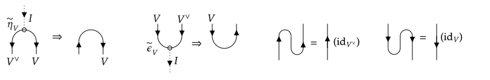
In particular, one could choose $\tilde{ϵ}_{{}^{∨}V} = ϵ_V$ and thus define $V$ as the right dual of ${}^{∨}V$. While there might be other choices, this choice must at least be isomorphic, such that $({}^{∨}V)^{∨} ≂ V$.
If objects $V$ and $W$ have left (respectively right) duals, than for a morphism $f ∈ \mathrm{Hom}(W,V)$, we furthermore define the left (respectively right) transpose ${}^{∨}f ∈ \mathrm{Hom}({}^{∨}V, {}^{∨}W)$ (respectively $f^{∨} ∈ \mathrm{Hom}(V^{∨}, W^{∨})$) as
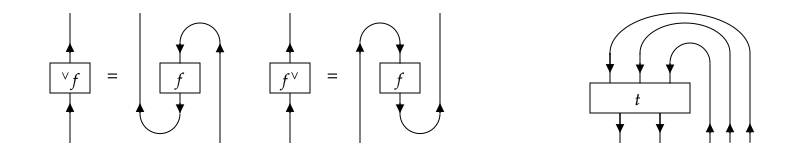
where on the right we also illustrate the mapping from $t ∈ \mathrm{Hom}(W_1 ⊗ W_2 ⊗ W_3, V_1 ⊗ V_2)$ to a morphism in $\mathrm{Hom}(I, V_1 ⊗ V_2 ⊗ {}^{∨} W_3 ⊗ {}^{∨} W_2 ⊗ {}^{∨} W_1)$.
Note that the graphical notation, at least the lines with opposite arrows, do not allow to distinguish between the right dual $V^{∨}$ and the left dual ${}^{∨}V$. We come back to this point below.
A left (or right) duality in a (monoidal) category is now defined as an association of a left (or right) dual with every object of the category, with corresponding exact pairings, and a category admitting such a duality is a left (or right) rigid category (or left or right autonomous category). Given that left (or right) morphism transposition satisfies ${}^{∨}(f ∘ g)= {}^{∨}g ∘ {}^{∨}f= {}^{∨}f ∘^{\mathrm{op}} {}^{∨}g$ and recalling ${}^{∨}(V ⊗ W) = {}^{∨}W ⊗ {}^{∨}V$ (and similar for right duality), we can define duality in a functorial way. A (left or right) rigid category $\mathcal{C}$ is a category which admits a (left or right) duality functor, i.e. a functor from $\mathcal{C}$ to $\mathcal{C}^{\mathrm{rev}}$ that maps objects to its (left or right) dual, and morphisms to its (left or right) transpose. In particular, the snake rules can now be read as the functioral requirement that ${}^{∨}(\mathrm{id}_V) = \mathrm{id}_{{}^{∨}V}$.
In all of this, left and right duality can be completely distinct. Equivalently, the left dual of the left dual of an object $V$, i.e. ${}^{∨∨}V$ is not necessarily $V$ itself, nor do the exact pairings enable us to construct an isomorphism between ${}^{∨∨}V$ and $V$. For finite-dimensional vector spaces, however, ${}^{∨∨}V$ and $V$, or thus ${}^{∨}V$ and $V^{∨}$ are known to be isomorphic. The categorical generalization is that of a pivotal category (or sovereign category), i.e. a monoidal category with two-sided duals $X^* = {}^{∨}X = X^{∨} = X^*$ such that the left and right duality functor coincide, and thus also the left and right transpose of morphisms, i.e. $f^* = {}^{∨}f = f^{∨} ∈ \mathrm{Hom}(V^*,W^*)$ for any $f∈\mathrm{Hom}(W,V)$. Given that $\tilde{ϵ}_{X}$ and $\tilde{η}_{X}$ can be interpreted as an exact pairing $ϵ_{X^*}$ and $η_{X^*}$, this can be used to recognize $X$ as a left dual of $X^*$, which is then not necessarily equal but at least isomorphic to $X^{**}$ with the isomorphism given by the mixed snake composition alluded to in the beginning of this section, i.e. $δ_X: X → X^{**}$ given by $δ_X = (\tilde{ϵ}_X ⊗ \mathrm{id}_{X^*}) ∘ (\mathrm{id}_X ⊗ η_{X^*})$. A more formal statement is that $δ$ is a natural isomorphism between the double dual functor and the identity functor of a category $C$. In a similar manner, such a $δ$ can be used to define a natural isomorphism between left and right dual functor (which is a slight generalization of the above definition of a pivotal category), and as such it is often called the pivotal structure.
Hence, in a pivotal category, left and right duals are the same or isomorphic, and so are objects and their double duals. As such, we will not distinguish between them in the graphical representation and suppress the natural isomorphism $δ$. Note, as already suggested by the graphical notation above, that we can interpret transposing a morphism as rotating its graphical notation by 180 degrees (either way).
Furthermore, in a pivotal category, we can define a map from $\mathrm{End}(V)$, the endomorphisms of an object $V$ to endomorphisms of the identity object $I$, i.e. the field of scalars in the case of the category $\mathbf{Vect}$, known as the trace of $f$. In fact, we can define both a left trace as
$\mathrm{tr}_{\mathrm{l}}(f) = ϵ_V ∘ (\mathrm{id}_{V^*} ⊗ f) ∘ \tilde{η}_V$
and a right trace as
$\mathrm{tr}_{\mathrm{r}}(f) = \tilde{ϵ}_V ∘ (f ⊗ \mathrm{id}_{V^*}) ∘ η_V$
They are graphically represented as
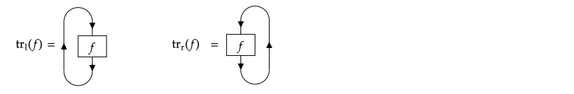
and they do not need to coincide. Note that $\mathrm{tr}_{\mathrm{l}}(f) = \mathrm{tr}_{\mathrm{r}}(f*)$ and that $\mathrm{tr}_{\mathrm{l}/\mathrm{r}}(f∘g) = \mathrm{tr}_{\mathrm{l}/\mathrm{r}}(g∘f)$. The (left or right) trace of the identity morphism $\mathrm{id}_V$ defines the corresponding (left or right) dimension of the object $V$, i.e. $\mathrm{dim}_{\mathrm{l}/\mathrm{r}}(V) = tr_{\mathrm{l}/\mathrm{r}}(\mathrm{id}_V)$. In a spherical category, both definitions of the trace coincide for all $V$ and we simply refer to the trace $\mathrm{tr}(f)$ of an endomorphism. The particular value $\mathrm{dim}(V) = \mathrm{tr}(\mathrm{id}_V)$ is known as the (quantum) dimension of the object $V$, referred to as dim(V) in TensorKit.jl.
For further information and a more detailed treatment of rigid and pivotal categories, we refer to [turaev] and [selinger]. We conclude this section by studying the example of $\mathbf{SVect}$. Let us, in every super vector space $V$, define a basis $|n⟩$ that is compatible with the grading, such $|n|=0,1$ indicates that $|n⟩ ∈ V_{|n|}$. We again define a dual basis ${⟨m|}$ for $V^*$ (such that $⟨m|n⟩ = δ_{m,n}$), and then define the left evaluation by $ϵ_V:V^* ⊗ V → ℂ: ⟨m| ⊗_\mathrm{g} |n⟩ → ⟨m|n⟩ = δ_{m,n}$ and the left coevaluation by $η_V:ℂ→ V ⊗ V^*:α → α ∑_n |n⟩ ⊗_\mathrm{g} ⟨n|$. Note that this does not require an inner product and satisfies the snake rules. For the right evaluation and coevaluation, there are two natural choices, namely $\tilde{ϵ}_V:V ⊗ V^* → ℂ: |n⟩ ⊗_\mathrm{g} ⟨m| → (±1)^{|n|} δ_{m,n}$ and $\tilde{η}_V:ℂ → V^* ⊗ V: α → ∑_n (±1)^{|n|} ⟨n| ⊗_\mathrm{g} |n⟩$. The resulting trace of an endomorphism $f ∈ \mathrm{End}(V)$ is given by $\mathrm{tr}^{\mathrm{l}}(f) = \mathrm{tr}^{\mathrm{r}}(f) = \mathrm{tr}(f) = ∑_n (± 1)^{|n|} ⟨n|f|n⟩$ and is known as either the regular trace (in the case of $+1$) or the supertrace (in the case of $-1$). In particular, $\mathrm{dim}(V) = \mathrm{dim}(V_0) ± \mathrm{dim}(V_1)$, and can be negative in the case of the supertrace. Both are valid choices to make $\mathbf{SVect}$ into a spherical category.
Braidings, twists and ribbons
While duality and the pivotal structure allow to move vector spaces back and forth between the domain (source) and codomain (target) of a tensor map, reordering vector spaces within the domain or codomain of a tensor map , i.e. within a tensor product $V_1 ⊗ V_2 ⊗ … V_N$ requires additional structure. In particular, we need at the very least a braided tensor category $C$, which is endowed with a braiding $τ$, i.e. a natural isomorphism ${τ_{V,W}:V⊗W → W⊗V}_{V,W ∈ \mathrm{Ob}(C)}$ between the functors $⊗$ and $⊗^{\mathrm{op}}$ such that $τ_{V,V′}∘(f ⊗ g) = (g ⊗ f)∘τ_{W,W′}$ for any morphisms $f ∈ \mathrm{Hom}(W,V)$ and $g ∈ \mathrm{Hom}(W′,V′)$. A valid braiding needs to satisfy a coherence condition with the associator $α$ known as the hexagon equation, which expresses that the braiding is $⊗$-multiplicative, i.e. $τ_{U,V⊗W} = (\mathrm{id}_V ⊗ τ_{U,W})(τ_{U,V}⊗\mathrm{id}_W)$ and $τ_{U⊗V,W} = (τ_{U,W}⊗\mathrm{id}_VW)(\mathrm{id}_U ⊗ τ_{V,W})$ (where the associator has been omitted). We also have $λ_V ∘ τ_{V,I} = ρ_{V,I}$, $ρ_V ∘ τ_{I,V} = λ_{V}$ and $τ_{V,I} = τ_{I,V}^{-1}$ for any $V ∈ \mathrm{Ob}(C)$.
The braiding isomorphism $τ_{V,W}$ and its inverse are graphically represented as the lines $V$ and $W$ crossing over and under each other:
such that we have
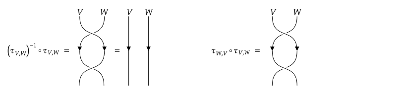
where the expression on the right hand side, $τ_{W,V}∘τ_{V,W}$ can generically not be simplified. Hence, for general braidings, there is no unique choice to identify a tensor in $V⊗W$ and $W⊗V$, as the isomorphisms $τ_{V,W}$, $τ_{W,V}^{-1}$, $τ_{V,W} ∘ τ_{W,V} ∘ τ_{V,W}$, … mapping from $V⊗W$ to $W⊗V$ can all be different. In order for there to be a unique map from $V_1 ⊗ V_2 ⊗ … V_N$ to any permutation of the objects in this tensor product, the braiding needs to be symmetric, i.e. $τ_{V,W} = τ_{W,V}^{-1}$ or, equivalently $τ_{W,V} ∘ τ_{V,W} = \mathrm{id}_{V⊗W}$. The resulting category is then referred to as a symmetric tensor category. In a graphical representation, it means that there is no distinction between over- and under- crossings and, as such, lines can just cross, where the crossing represents the action of $τ_{V,W} = τ_{W,V}^{-1}$.
In the case of the category $\mathbf{Vect}$ a valid braiding consists of just flipping the the objects/morphisms involved, e.g. for a simple cartesian tensor, permuting the tensor indices is equivalent to applying Julia's function permutedims on the underlying data. Less trivial braiding implementations arise in the context of tensors with symmetries (where the fusion tree needs to be reordered, as discussed in Sectors, representation spaces and fusion trees) or in the case of $\mathbf{SVect}$, which will again be studied in detail at the end of this section.
The braiding of a space and a dual space also follows naturally, it is given by $τ_{V^*,W} = λ_{W ⊗ V^*} ∘ (ϵ_V ⊗ \mathrm{id}_{W ⊗ V^*}) ∘ (\mathrm{id}_{V^*} ⊗ τ_{V,W}^{-1} ⊗ \mathrm{id}_{V^*}) ∘ (\mathrm{id}_{V^*⊗ W} ⊗ η_V) ∘ ρ_{V^* ⊗ W}^{-1}$, i.e.
Balanced categories $C$ are braided categories that come with a twist $θ$, a natural transformation from the identity functor $1_C$ to itself, such that $θ_V ∘ f = f ∘ θ_W$ for all morphisms $f ∈ \mathrm{Hom}(W,V)$, and for which main requirement is that
$θ_{V⊗W} = τ_{W,V} ∘ (θ_W ⊗ θ_V) ∘ τ_{V,W} = (θ_V ⊗ θ_W) ∘ τ_{W,V} ∘ τ_{V,W}.$
In particular, a braided pivotal category is balanced, as we can even define two such twists, namely a left and right twist given by
$θ^{\mathrm{l}}_V = (ϵ_V ⊗ \mathrm{id}_V)(\mathrm{id}_{V*} ⊗ τ_{V,V}) (\tilde{η}_V ⊗ \mathrm{id}_V)$
and
$θ^{\mathrm{r}}_V = (\mathrm{id}_V ⊗ \tilde{ϵ}_V)(τ_{V,V} ⊗ \mathrm{id}_{V*})(\mathrm{id}_V ⊗ ϵ_V)$
where we omitted the necessary left and right unitors and associators. Graphically, the twists and their inverse (for which we refer to [turaev]) are then represented as
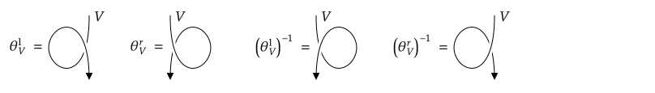
The graphical representation also makes it straightforward to verify that $(θ^{\mathrm{l}}_V)^* = θ^{\mathrm{r}}_{V^*}$, $(θ^{\mathrm{r}}_V)^* = θ^{\mathrm{l}}_{V^*}$ and $\mathrm{tr}_{\mathrm{l}}( θ^{\mathrm{r}}_V ) = \mathrm{tr}_{\mathrm{r}}( θ^{\mathrm{l}}_V )$.
When $θ^{\mathrm{l}} = θ^{\mathrm{r}}$, or thus, equivalently, $θ_V^* = θ_{V^*}$ for either $θ^{\mathrm{l}}$ or $θ^{\mathrm{r}}$, the category is said to be tortile or also a ribbon category, because its graphical representation is compatible with the isotopy of a ribbon, i.e. where the lines representing objects are depicted as ribbons. For convenience, we continue to denote them as lines. Ribbon categories are necessarily spherical, i.e. one can prove the equivalence of the left and right trace.
Alternatively, one can start from a balanced and rigid category (e.g. with a left duality), and use the twist $θ$, which should satisfy $θ_V^* = θ_{V^*}$, to define a pivotal structure, or, to define the exact pairing for the right dual functor as
$\tilde{η}_V = τ_{V,V^*} ∘ (θ_V ⊗ \mathrm{id}_{V^*}) ∘ η_V = (\mathrm{id}_{V^*} ⊗ θ_V) ∘ τ_{V,V^*} ∘ η_V$
$\tilde{ϵ}_V = ϵ_V ∘ (\mathrm{id}_{V^*} ⊗ θ_V) ∘ τ_{V,V^*} = ϵ_V ∘ τ_{V,V^*} ∘ (θ_V ⊗ \mathrm{id}_{V^*})$
or graphically
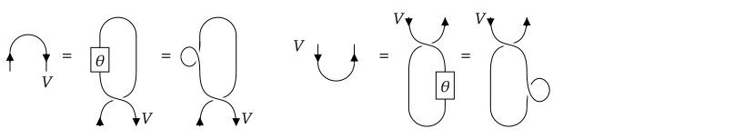
where we have drawn $θ$ as $θ^{\mathrm{l}}$ on the left and as $θ^{\mathrm{r}}$ on the right, but in this case the starting assumption was that they are one and the same, and we defined the pivotal structure so as to make it compatible with the graphical representation. This construction of the pivotal structure can than be used to define the trace, which is spherical, i.e.
$\mathrm{tr}(f) = ϵ_V ∘ τ_{V,V^*} ∘ (( θ_V ∘ f) ⊗ \mathrm{id}_{V^*}) ∘ η_V = ϵ_V ∘ (\mathrm{id}_{V^*} ⊗ (f ∘ θ_V)) ∘ τ_{V,V^*} ∘ η_V$
Note finally, that a ribbon category where the braiding is symmetric, is known as a compact closed category. For a symmetric braiding, the trivial twist $θ_V = \mathrm{id}_V$ is always a valid choice, but it might not be the choice that one necessarily want to use. Let us study the case of $\mathbf{SVect}$ again. Reinvoking our basis $|m⟩ ∈ V$ and $|n⟩ ∈ W$, the braiding $τ_{V,W}$ is given by the Koszul sign rule, i.e. $τ_{V,W}:|m⟩ ⊗_\mathrm{g} |n⟩ ↦ (-1)^{|m| |n|} |n⟩ ⊗_\mathrm{g} |m⟩$. Hence, braiding amounts to flipping the two spaces, but picks up an additional minus sign if both $|m⟩ ∈ V_1$ and $|n⟩ ∈ W_1$. This braiding is symmetric, i.e. $τ_{W,V} ∘ τ_{V,W} = \mathrm{id}_{V⊗W}$. Between spaces and dual spaces, we similarly obtain the braiding rule $⟨m| ⊗_\mathrm{g} |n⟩ ↦ (-1)^{|m| |n|} |n⟩ ⊗_\mathrm{g} ⟨m|$. Combining the braiding and the pivotal structure gives rise to a ribbon category, and thus, a compact closed category, where the resulting twist is given by $θ_V : |n⟩ ↦ (∓1)^{|n|} |n⟩$ for $\tilde{ϵ}_V:V ⊗ V^* → ℂ: |n⟩ ⊗_\mathrm{g} ⟨m| ↦ (±1)^{|n|} δ_{m,n}$ and corresponding $\tilde{η}_V$. Hence, if the right (co)evaluation contains a minus sign, the twist is $θ_V = \mathrm{id}_V$, which, as mentioned above, is always a valid twist for a symmetric category. However, if the right (co)evaluation contains no minus sign, the twist acts as the parity endomorphism, i.e. as $+1$ on $V_0$ and as $-1$ on $V_1$, which, as we will see in the next section, corresponds to a choice bearing additional structure.
Adjoints and dagger categories
A final aspect of categories as they are relevant to physics, and in particular quantum physics, is the notion of an adjoint or dagger. A dagger category $C$ is a category together with an involutive functor $†:C→C^{\mathrm{op}}$, i.e. it acts as the identity on objects, whereas on morphisms $f:W→V$ it defines a morphism $f^†:V→W$ such that
- $\mathrm{id}_V^† = \mathrm{id}_V$
- $(f ∘ g)^† = f^† ∘^{\mathrm{op}} g^† = g^† ∘ f^†$
- $(f^†)^† = f$
Sometimes also the symbol $*$ is used instead of $†$, however we have already used $*$ to denote dual objects and transposed morphisms in the case of a pivotal category.
If the category is $ℂ$-linear, the dagger functor is often assumed to be antilinear, i.e. $(λ f)^† = \bar{λ} f^†$ for $λ ∈ ℂ$ and $f ∈ \mathrm{Hom}(V,W)$. In a dagger category, a morphism $f:W→V$ is said to be unitary if it is an isomorphism and $f^{-1} = f^†$. Furthermore, an endomorphism $f:V→V$ is hermitian or self-adjoint if $f^† = f$. Finally, we will also use the term isometry for a morphism $f:W→V$ which has a left inverse $f^†$, i.e. such that $f^† ∘ f = \mathrm{id}_W$, but for which $f ∘ f^†$ is not necessarily the identity (but rather some orthogonal projector, i.e. a hermitian idempotent in $\mathrm{End}(V)$).
In the graphical representation, the dagger of a morphism can be represented by mirroring the morphism around a horizontal axis, and then reversing all arrows (bringing them back to their original orientation before the mirror operation):
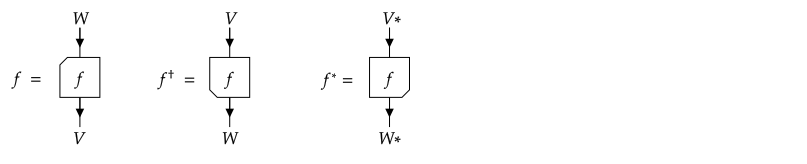
where for completeness we have also depicted the graphical representation of the transpose, which is a very different operation. In particular, the dagger does not reverse the order of the tensor product. Note that, for readibility, we have not mirrored or rotated the label in the box, but this implies that we need to use a type of box for which the action of mirroring or rotating can be observed.
A dagger monoidal category is one in which the associator and left and right unitor are unitary morphisms. Similarly, a dagger braided category also has a unitary braiding, and a dagger balanced category in addition has a unitary twist.
There is more to be said about the interplay between the dagger and duals. Given a left evaluation $ϵ_V: V^* ⊗ V → I$ and coevaluation $η_V: I → V ⊗ V^*$, we can define a right evaluation $\tilde{ϵ}_V = (η_V)^†$ and coevaluation $\tilde{η}_V = (ϵ_V)^†$. Hence, left rigid dagger categories are automatically pivotal dagger categories.
The (right) twist defined via the pivotal structure now becomes
$θ_V = (\mathrm{id}_V ⊗ (η_V)^†) ∘ (τ_{V,V} ⊗ \mathrm{id}_{V^*}) ∘ (\mathrm{id}_V ⊗ η_V)$
and is itself unitary. Even for a symmetric category, the twist defined as such must not be the identity, as we discuss for the $\mathbf{SVect}$ example below.
Finally, the dagger allows to define two Hermitian forms on the morphisms, namely $⟨ f, g ⟩_{\mathrm{l}/\mathrm{r}} = \mathrm{tr}_{\mathrm{l}/\mathrm{r}}(f^† g)$, which coincide for a spherical category. For a unitary $𝕜$-linear category, these Hermitian forms should be positive definite and thus define an inner product on each of the homomorphism spaces $\mathrm{Hom}(W,V)$. In particular then, dimensions of objects are positive, as they satisfy $\mathrm{dim}_{\mathrm{l}/\mathrm{r}}(V) = ⟨ \mathrm{id}_V, \mathrm{id}_V ⟩_{\mathrm{l}/\mathrm{r}}$.
This concludes the most important categorical definitions and structures that we want to discuss for the category $\mathbf{Vect}$, but which can also be realized in other categories. In particular, the interface of TensorKit.jl could in principle represent morphisms from any $𝕜$-linear monoidal category, but assumes categories with duals to be pivotal and in fact spherical, and categories with a braiding to be ribbon categories. A dagger ribbon category where the braiding is symmetric, i.e. a dagger category which is also a compact closed category and where the right (co)evaluation is given via the dagger of the left (co)evaluation is called a dagger compact category. This is the playground of quantum mechanics of bosonic and fermionic systems. However, we also allow for non- symmetric braiding in TensorKit.jl, though this functionality is currently much more limited.
Again studying the category $\mathbf{SVect}_{ℂ}$ (now explicitly over the complex numbers) and using the conventional adjoint or the complex Euclidean inner product to define the dagger functor, the right (co)evaluation that is obtained from applying the dagger to the left (co)evaluation is the definition we gave above with the $+1$ sign. This choice gives rise to a regular trace (versus the supertrace) of endomorphisms, to positive dimensions, and a non-trivial twist that acts as the parity endomorphism. The resulting category is then a dagger compact category, that can be used for the quantum mechanical description of fermionic systems. The bosonic version is obtained by restricting to the subcategory $\mathbf{Vect}$.
Direct sums, simple objects and fusion categories
These last two section on fusion categories is also applicable, in a straightforward manner, to $\mathbf{Vect}$ and $\mathbf{SVect}$, but is rather meant to provide the background of working with symmetries. We first need two new concepts:
An object $W ∈ \mathrm{Ob}(C)$ is a direct sum of objects $V_1, V_2, …, V_k ∈ \mathrm{Ob}(C)$ if there exists a family morphisms $x_α ∈ \mathrm{Hom}(V_α,W)$ and $y^α ∈ \mathrm{Hom}(W,V_α)$ such that $\mathrm{id}_W = ∑_{α=1}^{k} x_α ∘ y^α$ and $y^α ∘ x_β = δ^α_β \mathrm{id}_{V_α}$. The morphisms $x_α$ and $y^α$ are known as inclusions and projections respectively, and in the context of dagger categories it is natural to assume $y^α = x_α^†$ in order to obtain an orthogonal direct sum decomposition.
A simple object $V ∈ \mathrm{Ob}(C)$ of a $𝕜$-linear category $C$ is an object for which $End_C(V) ≂ 𝕜$, i.e. the algebra of endomorphisms on $V$ is isomorphic to the field (or ring) $𝕜$. As $End_C(V)$ always contains the identity morphism $\mathrm{id}_V$, and this must be the only linearly independent endomorphism if $V$ is a simple object, the isomorphism between $\mathrm{End}_C(V)$ and $𝕜$ is typically of the form $k ∈ 𝕜 ↔ k \mathrm{id}_V ∈ End_C(V)$. In particular, for $\mathbf{SVect}$ and its subcategory $\mathbf{Vect}$, the unit object $I$ is a simple object.
In particular, for a pivotal $𝕜$-linear category where $I$ is simple, it holds that the left and right dimensions of any simple object $V$ are invertible in $𝕜$, and that any endomorphism $f ∈ \mathrm{End}(V)$ can be written as
$f = (\mathrm{dim}_\mathrm{l}(V))^{-1} \mathrm{tr}_{\mathrm{l}}(f) \mathrm{id}_V = (\mathrm{dim}_\mathrm{r}(V))^{-1} \mathrm{tr}_{\mathrm{r}}(f) \mathrm{id}_V$
Strictly speaking, this holds only if the category is non-degenerate, which means that $I$ is simple and that any non-degenerate pairing $e:V ⊗ W → I$ induces a non- degenerate pairing $\mathrm{Hom}(I,V) ⊗ \mathrm{Hom}(I,W) → \mathrm{End}(I)$. This property is always satisfied for a pre-fusion category $C$, i.e. a monoidal $𝕜$- linear category having a set $\mathcal{S} ⊂ \mathrm{Ob}(C)$ of simple objects $\mathcal{S}=\{I, V_1, V_2, \ldots\}$ such that
- the monoidal unit $I_C ∈ \mathcal{S}$;
- $\mathrm{Hom}_C(V_i,V_j) = 0$ (the singleton set containing only the zero homomorphism) for any distinct $V_i, V_j ∈ \mathcal{S}$;
- every object $V ∈ \mathrm{Ob}(C)$ can be written as a direct sum of a finite family of elements from $\mathcal{S}$.
Note that in the direct sum decomposition of an object $V$, a particular simple object $V_i$ might appear multiple times. This number is known as the multiplicity index $N^V_i$, and equal to the rank of $\mathrm{Hom}(V,V_i)$ or, equivalently, of $\mathrm{Hom}(V_i,V)$. Hence, we can choose inclusion and projection maps $x_{i,μ}:V_i→V$ and $y^{i,μ}:V→V_i$ for $μ = 1,\ldots, N^V_i$, such that $\mathrm{id}_V = \sum_{i}\sum_{μ=1}^{N_V^i} x_{i,μ} ∘ y^{i,μ}$ and $y^{i,μ} ∘ x_{j,ν} = δ^i_j δ^μ_ν$. In particular, for a simple object $V$, it either appears in $\mathcal{S}$ or is isomorphic to an object $S$. We thus have $N^V_i = 1$ for one particular object $V_i$ and $N^V_j= 0$ for all other $j$, with $x_{i}$ and $y^i = (x_i)^{-1}$ representing the isomorphism between $V$ and $V_i$.
The homomorphisms between two general objects $W$ and $V$ in a pre-fusion category can be decomposed as
$\mathrm{Hom}(W,V) ≂ ⨁_{V_i ∈ \mathcal{S}} \mathrm{Hom}(W,V_i) ⊗ \mathrm{Hom}(V_i,V)$
and thus that the rank of $\mathrm{Hom}(W,V)$ is given by $∑_i N^W_i N^V_i$.
A fusion category is a pre-fusion category that has (left or right) duals, i.e. that is rigid, and that only has a finite number of isomorphism classes of simple objects. Note that the duality functor maps $\mathrm{End}(V)$ to $\mathrm{End}(V^*)$, such that, if $V$ is a simple object, so must be $V^*$. Henceforth, we will be sloppy about the distinction between a pre-fusion or fusion category, only use the latter term, even when it is not fully justified.
Before continuing, let us use some examples to sketch the relevance of the concept of fusion categories. As mentioned, the categories $\mathbf{Vect}_𝕜$ and $\mathbf{SVect}_𝕜$ have $I ≂ 𝕜$ as simple object. For $\mathbf{Vect}$, this is the only simple object, i.e. any other vector space $V$ over $𝕜$, can be thought of as a direct sum over $N^V_I = \mathrm{dim}(V)$ multiple copies of $𝕜$. In $\mathbf{SVect}$, the object $J = 0 ⊕ 𝕜$ with $J_0=0$ the zero dimensional space and $J_1 ≂ 𝕜$ is another simple object. Clearly, there are no non-zero grading preserving morphisms between $I$ and $J$, i.e. $\mathrm{Hom}(I,J) = 0$, whereas $\mathrm{Hom}(J,J) ≂ 𝕜$. Any other super vector space $V=V_0 ⊕ V_1$ can be written as a direct sum over $N^V_I = \mathrm{dim}(V_0)$ copies of $I$ and $N^V_J = \mathrm{dim}(V_1)$ copies of $J$.
A more representative example is that of the category $C = \mathbf{Rep}_{\mathsf{G}}$, the category of representations of a group $\mathsf{G}$. Colloquially, this could be thought of as a subcategory of $\mathbf{Vect}$ containing as objects vector spaces $V$ on which a representation of $\mathsf{G}$ is defined, denoted as $u_V(g)$ for $g ∈ \mathsf{G}$, and as morphisms the equivariant transformations, i.e. intertwiners between the representations on the source and target:
$\mathrm{Hom}_C(W,V) = \{f ∈ \mathrm{Hom}_{\mathbf{Vect}}(W,V)| u_V(g) ∘ f = f ∘ u_W(g), ∀ g ∈ G\}.$
Note that the $u_V(g)$ is itself generally not an element from $End_C(V)$. Simple objects $V_a$ are those corresponding irreducible representations (irreps) $a$ of the group $\mathsf{G}$, for which Schur's lemma implies $End_C(V_a) ≂ 𝕜$ and $\mathrm{Hom}_C(V_a, V_b) = 0$ if $a$ and $b$ are not equivalent irreps. On the dual space $V^*$, the group acts with the contragradient representation, i.e. $u_{V^*}(g) = ((u_V(g))^{-1})^* = u_V(g^{-1})^*$, where one should remind that $^*$ denotes the transpose. For a finite group or compact Lie group, we can introduce a dagger and restrict to unitary representations, such that $u_V(g)^{-1} = u_V(g)^†$ and the contragradient representation becomes the complex conjugated representation, denoted as $u_{V^*}(g) = \bar{u}_V(g)$. The resulting category can then be given the structure of a unitary ribbon (pre-)fusion category. (Note that the number of isomorphism classes of simple objects, i.e. the number of non-equivalent irreps, is finite only in the case of a finite group). This example is very relevant to working with symmetries in TensorKit.jl, and will be expanded upon in more detail below.
Fusion categories have a number of simplifying properties. A pivotal fusion category is spherical as soon as $\mathrm{dim}_{\mathrm{l}}(V_i) = \mathrm{dim}_{\mathrm{r}}(V_i)$ (i.e. the trace of the identity morphism) for all (isomorphism classes of) simple objects (note that all isomorphic simple objects have the same dimension). A braided pivotal fusion category is spherical if and only if it is a ribbon category.
Topological data of a unitary pivotal fusion category
More explicitly, the different structures (monoidal structure, duals and pivotal structure, braiding and twists) in a fusion category can be characterized in terms of the simple objects, which we will henceforth denoted with just $a$ instead of $V_a$. This gives rise to what is known as the topological data of a unitary pivotal fusion category, most importantly the $N$, $F$ and $R$ symbols, which are introduced in this final section.
Monoidal structure
Starting with the monoidal or tensor product, we start by characterizing how the object $a ⊗ b$ can be decomposed as a direct sum over simple objects $c$, which gives rise to the multiplicity indices $N_c^{ab}$, as well as the inclusion maps, which we henceforth denote as $X_{c,μ}^{ab}:c→a⊗b$ for $μ=1,…,N^{c}_{ab}$. In the context of a unitary fusion category, on which we now focus, the corresponding projection maps are $Y^{c,μ}_{a,b} = (X_{c,μ}^{ab})^†:a⊗b→c$ such that
$(X_{c,μ}^{ab})^† ∘ X_{c′,μ′}^{ab} = δ_{c,c′} δ_{μ,μ′} \mathrm{id}_c.$
Graphically, we represent these relations as
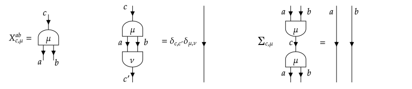
and also refer to the inclusion and projection maps as splitting and fusion tensor, respectively.
For both $(a⊗b)⊗c$ and $a⊗(b⊗c)$, which are isomorphic via the associator $α_{a,b,c}$, we must thus obtain a direct sum decomposition with the same multiplicity indices, leading to the associativity constraint
$N_{d}^{abc}= ∑_e N_{e}^{ab} N_d^{ec} = ∑_f N_{f}^{bc} N_{d}^{af}.$
The corresponding inclusion maps can be chosen as
$X_{d,(eμν)}^{abc} = (X_{e,μ}^{ab} ⊗ \mathrm{id}_c) ∘ X_{dν}^{e,c} : d→(a⊗b)⊗c.$
and
$\tilde{X}_{d,(fκλ)}^{abc} = (\mathrm{id}_a ⊗ X_{f,κ}^{bc}) ∘ X_{d,λ}^{af} : d→a⊗(b⊗c)$
and satisfy
$(X_{d,(eμν)}^{abc})^† ∘ X_{d′,(e′μ′ν′)}^{abc} = δ_{e,e′} δ_{μ,μ′} δ_{ν,ν′} δ_{d,d′} \mathrm{id}_d,$
$∑_{d,eμν} X_{d,(eμν)}^{abc} ∘ (X_{d,(eμν)}^{abc})^† = \mathrm{id}_{(a⊗b)⊗c},$
and similar for $\tilde{X}_{d,(fκλ)}^{a,b,c}$. Applying the associator leads to a relation
$α_{a,b,c} ∘ X_{d,(eμν)}^{abc} = ∑_{f,κ,λ} [F^{abc}_{d}]_{(eμν)}^{(fκλ)} \tilde{X}_{d,(fκλ)}^{abc}.$
which defines the F-symbol, i.e. the matrix elements of the associator
$(\tilde{X}_{d,(fκλ)}^{abc})^† ∘ α_{a,b,c} ∘ X_{d′,(eμν)}^{abc} = δ_{d,d′} [F^{abc}_{d}]_{(eμν)}^{(fκλ)} \mathrm{id}_d.$
Note that the left hand side represents a map in $\mathrm{Hom}(d′,d)$, which must be zero if $d′$ is different from $d$, hence the $δ_{d,d′}$ on the right hand side. In a strict category, or in the graphical notation, the associator $α$ is omitted and these relations thus represent a unitary basis transform between the basis of inclusion maps $X_{d,(eμν)}^{abc}$ and $\tilde{X}_{d,(fκλ)}^{abc}$, which is also called an F-move, i.e. graphically:
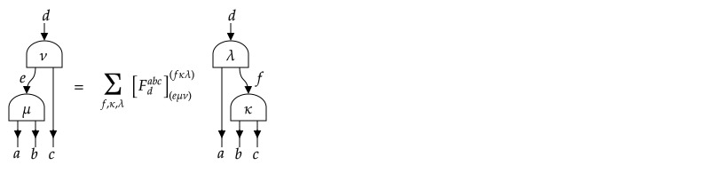
The matrix $F^{abc}_d$ is thus a unitary matrix. The pentagon coherence equation can also be rewritten in terms of these matrix elements, and as such yields the celebrated pentagon equation for the F-symbols. In a similar fashion, the unitors result in $N^{a1}_{b} = N^{1a}_b = δ^{a}_b$ (where we have now written $1$ instead of $I$ for the unit object) and the triangle equation leads to additional relations between the F- symbols involving the unit object. In particular, if we identify $X^{1a}_{a,1}:a→(1⊗a)$ with $λ_a^†$ and $X^{a1}_{a,1}:a→(a⊗1)$ with $ρ_a^†$, the triangle equation and its collaries imply that $[F^{1ab}_{c}]_{(11μ)}^{(cν1)} = δ^{ν}_{μ}$, and similar relations for $F^{a1b}_c$ and $F^{ab1}_c$, which are graphically represented as
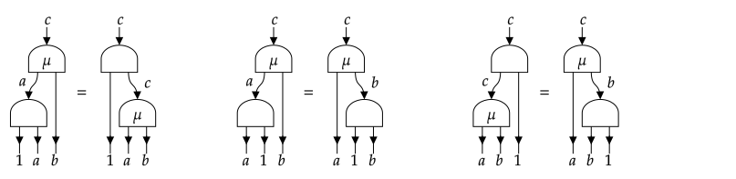
In the case of group representations, i.e. the category $\mathbf{Rep}_{\mathsf{G}}$, the splitting and fusion tensors are known as the Clebsch-Gordan coefficients, especially in the case of $\mathsf{SU}_2$. An F-move amounts to a recoupling and the F-symbols can thus be identified with the 6j-symbols (strictly speaking, Racah's W-symbol for $\mathsf{SU}_2$).
Duality and pivotal structure
Next up is duality. Since we are assuming a dagger category, it can be assumed pivotal, where the left dual objects are identical to the right dual objects, and the left and right (co)evaluation are related via the dagger. We have already pointed out above that the dual object $a^*$ of a simple object $a$ is simple, and thus, it must be isomorphic to one of the representives $\bar{a}$ of the different isomorphism classes of simple objects that we have chosen. Note that it can happen that $\bar{a}=a$. Duality implies an isomorphism between $\mathrm{Hom}(W,V)$ and $\mathrm{Hom}(I,V⊗W^*)$, and thus, for a simple object $a$, $\mathrm{End}(a) ≂ 𝕜$ is isomorphic to $\mathrm{Hom}(1,a⊗a^*)$, such that the latter is also isomorphic to $𝕜$, or thus $N^{a\bar{a}}_1 = 1$. Also, all possible duals of $a$ must be isomorphic, and thus there is a single representive $\bar{a}$, meaning that $N^{ab}_1 = δ^{b,\bar{a}}$, i.e. for all other $b ≠ \bar{a}$, $\mathrm{Hom}(1,a⊗b) ≂ \mathrm{Hom}(b^*,a) = 0$. Note that also $\bar{\bar{a}}=a$.
Let us now be somewhat careful with respect to the isomorphism between $a^*$ and $\bar{a}$. If $\bar{a} ≠ a$, we can basically choose the representative of that isomorphism class as $\bar{a} = a^*$. However, this choice might not be valid if $\bar{a}=a$, as in that case the choice is already fixed, and might be different from $a$. To give a concrete example, the $j=1/2$ representation of $\mathsf{SU}_2$ has a dual (contragradient, but because of unitarity, complex conjugated) representation which is isomorphic to itself, but not equal. In the context of tensors in quantum physics, we would like to be able to represent this representation and its conjugate, so we need to take the distinction and the isomorphism between them into account. This means that $\mathrm{Hom}(a^*,\bar{a})$ is isomorphic to $𝕜$ and contains a single linearly independent element, $Z_a$, which is a unitary isomorphism such that $Z_a^\dagger ∘ Z_a = \mathrm{id}_{a^*}$ and $Z_a ∘ Z_a^\dagger = \mathrm{id}_{\bar{a}}$. Using the transpose, we obtain $Z_a^* ∈ \mathrm{Hom}(\bar{a}^*,a)$, and thus it is proportional to $Z_{\bar{a}}$, i.e. $Z_a^* = χ_a Z_{\bar{a}}$ with $χ_a$ a complex phase (assuming $𝕜 = ℂ$). Another transpose results in $Z_{\bar{a}}^* = χ_{\bar{a}} Z_a$ with $χ_{\bar{a}} = \overline{χ_{a}}$, where bar of a scalar quantity denotes its complex conjugate to avoid confusion with the transpose functor. If $a$and $\bar{a}$ are distinct, we can essentially choose $Z_{\bar{a}}$ such that $χ_a$ is $1$. However, for $a=\bar{a}$, the value of $χ_a$ cannot be changed, but must satisfy $χ_a^2 = 1$, or thus $χ_a = ±1$. This value is a topological invariant known as the Frobenius-Schur indicator. Graphically, we represent this isomorphism and its relations as
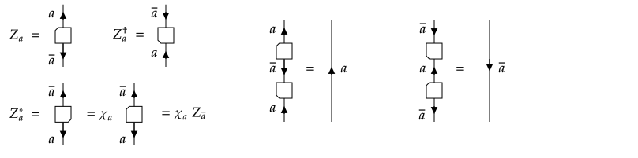
We can now discuss the relation between the exact pairing and the fusion and splitting tensors. Given that the (left) coevaluation $η_a ∈ \mathrm{Hom}(1, a⊗a^*)$, we can define the splitting tensor as
$X^{a\bar{a}}_{1} = \frac{1}{\sqrt{d_a}}(\mathrm{id}_a ⊗ Z_a) ∘ η_a = \frac{1}{\sqrt{d_a}}(Z_a^* ⊗ \mathrm{id}_{\bar{a}}) ∘ \tilde{η}_{\bar{a}} ∈ \mathrm{Hom}(1, a⊗\bar{a}).$
The prefactor takes care of normalization, i.e. with $η_a^† = \tilde{ϵ}_a$, we find $η_a^† ∘ η_a = \tilde{ϵ}_a ∘ η_a = \mathrm{tr}(\mathrm{id}_a) = d_a \mathrm{id}_1$, and thus $(X^{a\bar{a}}_{1})^† ∘ X^{a\bar{a}}_{1} = \mathrm{id}_1$. Here, we have denoted $d_a = \mathrm{dim}(a) = \mathrm{tr}(\mathrm{id}_a)$ for the quantum dimension of the simple objects $a$. With this information, we can then compute $[F^{a\bar{a}a}_a]$, which has a single element (it's a $1 × 1$ matrix), and find $[F^{a\bar{a}a}_a] = \frac{χ_a}{d_a}$, where we've used $\tilde{η}_a = ϵ_a^†$ and the snake rules. Hence, both the quantum dimensions and the Frobenius-Schur indicator are encoded in the F-symbol. Hence, they do not represent new independent data. Again, the graphical representation is more enlightning:
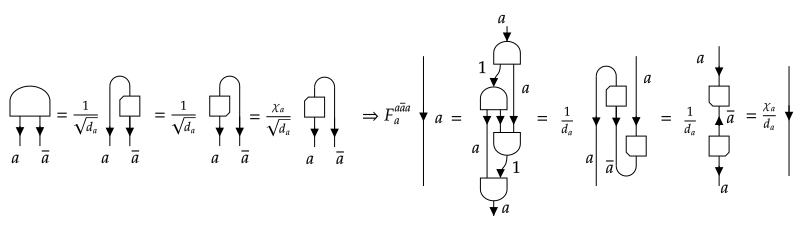
With these definitions, we can now also evaluate the action of the evaluation map on the splitting tensors, namely
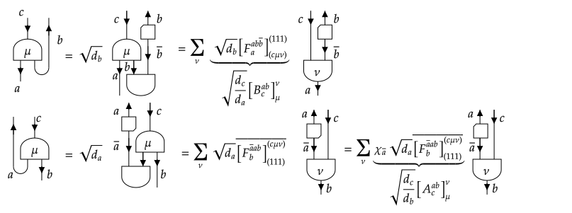
where again bar denotes complex conjugation in the second line, and we introduced two new families of matrices $A^{ab}_c$ and $B^{ab}_c$, whose entries are composed out of entries of the F-symbol, namely
$[A^{ab}_c]^\nu_\mu = \sqrt{\frac{d_a d_b}{d_c}} χ_{\bar{a}} \ \overline{[F^{\bar{a}ab}_b]_{(111)}^{(cμν)}}$
and
$[B^{ab}_c]^\nu_\mu = \sqrt{\frac{d_a d_b}{d_c}} [F^{ab\bar{b}}_a]^{(111)}_{(cμν)}.$
Composing the left hand side of first graphical equation with its dagger, and noting that the resulting element $f ∈ \mathrm{End}(a)$ must satisfy $f = d_a^{-1} \mathrm{tr}(f) \mathrm{id}_a$, i.e.
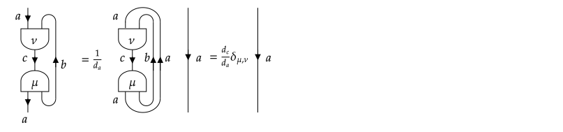
allows to conclude that $∑_ν [B^{ab}_c]^{ν}_{μ} \overline{[B^{ab}_c]^{ν}_{μ′}} = \delta_{μ,μ′}$, i.e. $B^{ab}_c$ is a unitary matrix. The same result follows for $A^{ab}_c$ in analogue fashion.
In the context of fusion categories, one often resorts to the so-called isotopic normalization convention, where splitting tensors are normalized as $(X^{ab}_{c,μ})^† ∘ X^{ab}_{c′,\mu′} = \sqrt{\frac{d_a d_b}{d_c}} δ_{c,c′} δ_{μ,μ′} \mathrm{id}_c$. This kills some of the quantum dimensions in formulas like the ones above and essentially allows to rotate the graphical notation of splitting and fusion tensors (up to a unitary transformation). Nonetheless, for our implementation of tensors and manipulations thereof (in particular orthonormal factorizations such as the singular value decomposition), we find it more convenient to work with the original normalization convention.
Let us again study in more detail the example $\mathbf{Rep}_{\mathsf{G}}$. The quantum dimension $d_a$ of an irrep $a$ is just the normal vector space dimension (over $𝕜$) of the space on which the irrep acts. The dual of an irrep $a$ is its contragradient representation, which in the case of unitary representations amounts to the complex conjugate representation. This representation can be isomorphic to an already defined irrep $\bar{a}$, for example $a$ itself. If that happens, it does not automatically imply that the irrep $a$ is real-valued. For example, all irreps of $\mathsf{SU}_2$ are self- dual, with the isomorphism given by a $π$ rotation over the $y$-axis (in the standard basis). The resulting Frobenius-Schur indicator is $+1$ for integer spin irreps, and $-1$ for half-integer spin irreps. The value $χ_a=+1$ indicates that the representation can be made real, e.g. the integer spin representations can be written as tensor representations of $\mathsf{SO}_3$ by a change of basis. The value $χ_a=-1$ indicates that the representation is quaternionic and cannot be made real.
The (co)evaluation expresses that the standard contraction of a vector with a dual vector yields a scalar, i.e. a representation and its dual (the contragradient) yields the trivial representation when correctly contracted. The coevaluation together with the isomorphism between the conjugate of irrep $a$ and some irrep $\bar{a}$ yields a way to define the Clebsch-Gordan coefficients (i.e. the splitting and fusion tensor) for fusing $a ⊗ \bar{a}$ to the trivial irrep, i.e. to what is called a singlet in the case of $\mathsf{SU}_2$.
Braidings and twists
Finally, we can study the braiding structure of a pivotal fusion category. Not all fusion categories have a braiding structure. The existence of a braiding isomorphism $τ_{V,W}:V⊗W→W⊗V$ requires at the very least that $N^{ab}_c = N^{ba}_c$ at the level of the simple objects. We can then express $τ_{a,b}$ in terms of its matrix elements as
$τ_{a,b} ∘ X^{ab}_{c,μ} = ∑_ν [R^{ab}_c]^ν_μ X^{ba}_{c,ν}$
or graphically
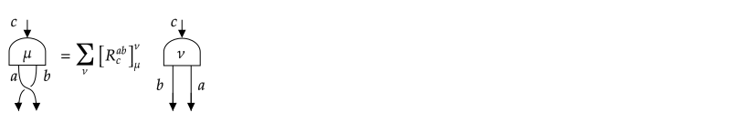
The hexagon coherence axiom for the braiding and the associator can then be reexpressed in terms of the F-symbols and R-symbols.
We can now compute the twist, which for simple objects needs to be scalars (or in fact complex phases because of unitarity) multiplying the identity morphism, i.e.
$θ_a = \mathrm{id}_a \sum_{b,μ} \frac{d_b}{d_a} [R^{aa}_b]^{μ}_{μ}$
or graphically
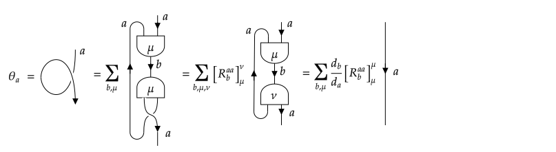
Henceforth, we reserve $θ_a$ for the scalar value itself. Note that $θ_a = θ_{\bar{a}}$ as our category is spherical and thus a ribbon category, and that the defining relation of a twist implies
$[R^{ba}_c]^κ_μ [R^{ab}_c]^μ_ν = \frac{\theta_c}{θ_a θ_b} δ^κ_ν$
If $a = \bar{a}$, we can furthermore relate the twist, the braiding and the Frobenius- Schur indicator via $θ_a χ_a R^{aa}_1 =1$, because of
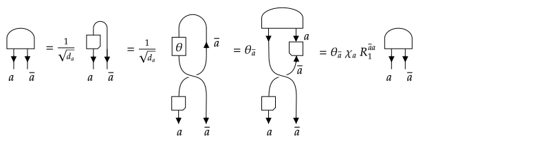
For the recurring example of $\mathbf{Rep}_{\mathsf{G}}$, the braiding acts simply as the swap of the two vector spaces on which the representations are acting and is thus symmetric, i.e. $τ_{b,a} ∘ τ_{a,b} = \mathrm{id}_{a⊗b}$. All the twists are simply $θ_a = 1$. For an irrep that is self-dual, i.e. $\bar{a}=a$, the final expression simplifies to $R^{aa}_1 = χ_a$ and thus states that the fusion from $a ⊗ a$ to the trivial sector is either symmetric under swaps if $χ_a=1$ or antisymmetric if $χ_a=-1$. For the case of $\mathsf{SU}_2$, the coupling of two spin $j$ states to a singlet it symmetric for integer $j$ and odd for half-integer $j$.
With this, we conclude our exposition of unitary fusion categories. There are many fusion categories that do not originate from the representation theory of groups, but are related to quantum groups and the representation theory of quasi-triangular Hopf algebras. They have non-integer quantum dimensions and generically admit for braidings which are not symmetric. A particular class of interesting fusion categories are modular fusion categories, which provide the mathematical structure for the theory of anyons and topological sectors in topological quantum states of matter. Thereto, one defines the modular S matrix, defined as
$S_{a,b} = \frac{1}{D} \mathrm{tr}(τ_{a,b} ∘ τ_{b,a}) = \frac{1}{D} ∑_c N^{ab}_c d_c \frac{θ_c}{θ_a θ_b}.$
The normalization constant is given by $D = \sqrt{\sum_a d_a^2}$, and thus truly requires a fusion category with a finite number of (isomorphism classes of) simple objects. For a modular fusion category, the symmetric matrix $S$ is non-degenerate, and in fact (for a unitary fusion category) unitary. Note, however, that for a symmetric braiding $S_{a,b} = \frac{d_a d_b}{D}$ and thus $S$ is a rank 1 matrix. In particular, $\mathbf{Rep}_{\mathsf{G}}$ is never a modular category and the properties associated with this are not of (direct) importance for TensorKit.jl. We refer to the references for further information about modular categories.
Bibliography
- turaev
Turaev, V. G., & Virelizier, A. (2017). Monoidal categories and topological field theory (Vol. 322). Birkhäuser. - selinger
Selinger, P. (2010). A survey of graphical languages for monoidal categories. In New structures for physics (pp. 289-355). Springer, Berlin, Heidelberg. [https://arxiv.org/abs/0908.3347](https://arxiv.org/abs/0908.3347) - kassel
Kassel, C. (2012). Quantum groups (Vol. 155). Springer Science & Business Media. - kitaev
Kitaev, A. (2006). Anyons in an exactly solved model and beyond. Annals of Physics, 321(1), 2-111. - beer
From categories to anyons: a travelogue Kerstin Beer, Dmytro Bondarenko, Alexander Hahn, Maria Kalabakov, Nicole Knust, Laura Niermann, Tobias J. Osborne, Christin Schridde, Stefan Seckmeyer, Deniz E. Stiegemann, and Ramona Wolf [https://arxiv.org/abs/1811.06670](https://arxiv.org/abs/1811.06670)